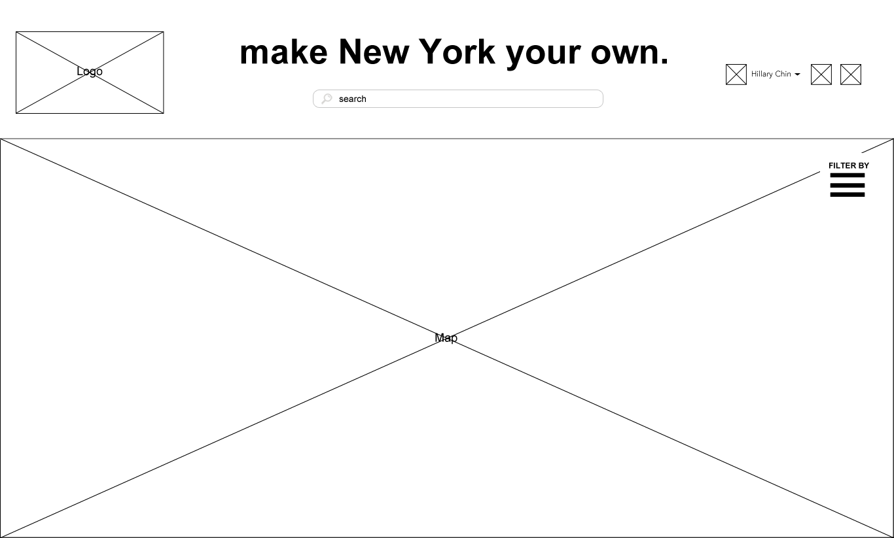
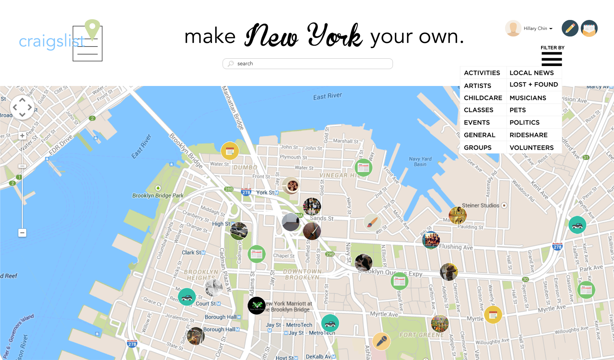
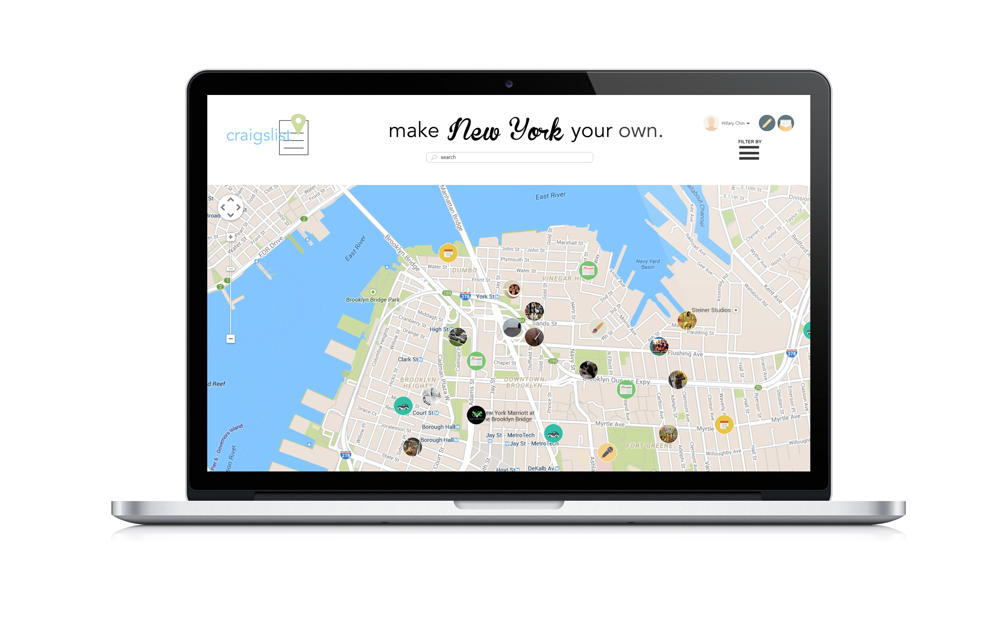
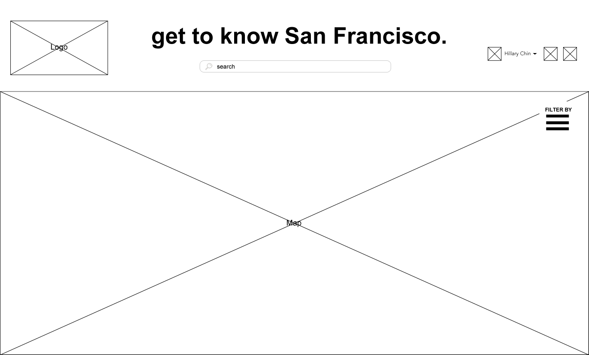
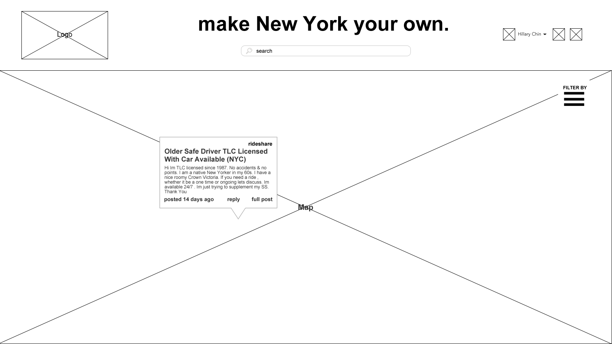
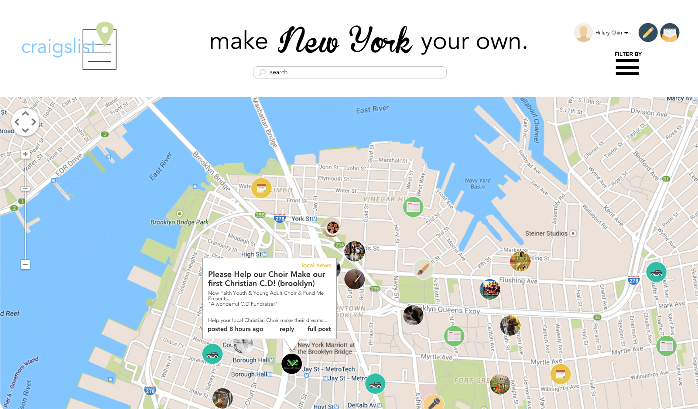
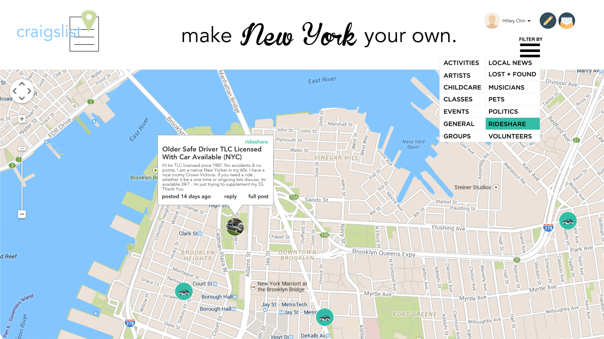
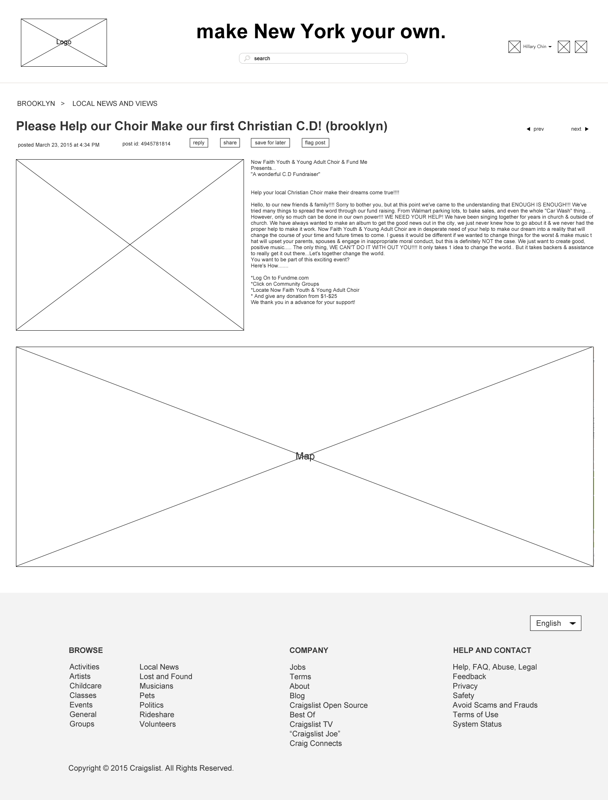
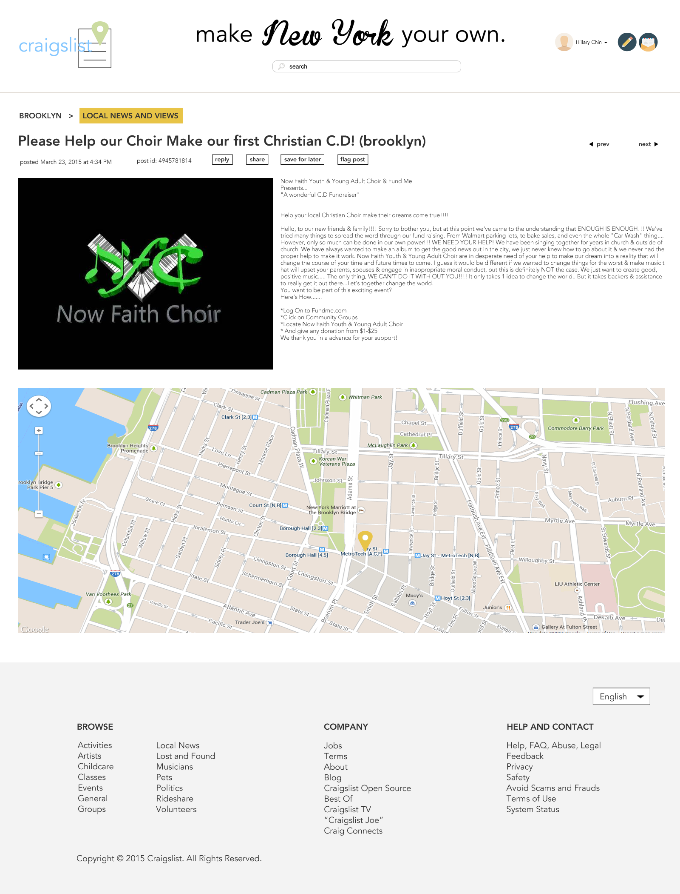

Midterm
My redesign of Craigslist focuses on the community section of the current website. It narrows the website down to one of its main focal points, which is location-based listings. The goal of my redesign is to give users the ability to immerse themselves into their own city and personally connect with the people, things, and happenings around them. Its intention is to give everyday people an easy way to always find something to do, buy, learn, or meet in their area. Maps are a major component of the interface as they provide an intuitive way for users to browse and locate whatever they desire. My concept also completely rebrands the company with a new logo and website design that is fresh, attractive, and modern. My goal with the design was to achieve minimalism and simplicity while using colors, images, and icons to keep it interesting and friendly. It also eliminates the jumbled mess of a navigation the current Craigslist uses by ridding of all the lists and replacing it with a map that displays images, icons, and summaries.
  
The layout for the homepage is simple. Users are greeted with a header and a map that fills up the whole size of their browser. The header contains the Craigslist logo on the upper left hand corner, a randomized tagline that displays the user's location in the center with a search bar below it, and a drop-down menu on the upper right hand corner that filters results on the map. By default when the page loads, the map displays all available listings from every category.

The homepage wireframe, but with a different location and tagline.
  
When a user clicks a category in the filter results menu, the result image circles on the map display only the results from the chosen category. Each category is color coded. Results with no image displays a default icon for that category. The category's icon background color, the hover color when choosing a category from the filter menu, and the text color of the pop-up box that shows when you click on a result all match the category's color.
 

The full post view of a listing.
Things to add in the future: Different views (list view, gallery view), responsive designs, other suggestions people give in class~